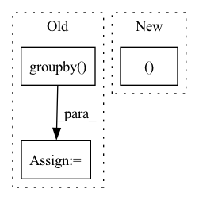

Pattern ID :1860
Before Change
cluster_sums = X.groupby("cluster")["weight"].sum()
print("cluster_sums", cluster_sums)
// Pandas object. (id->Index)
clusters = [list(X.groupby( "cluster") .get_group(c).sort_values("id").itertuples()) for c in range(C)]
clusters_lengths = {i: len(clusters[i]) for i in range(len(clusters))}
print("cluster_lengths", clusters_lengths)
bins = first_fit_cluster(K, clusters, id_to_node=id_to_node)
// sortAfter Change
id_to_node = {node.id: node for node in nodes}
C = n_clusters
clusters, to_unify = make_clusters(work_graph, nodes, node_weight_function, C=C)
bins = first_fit_cluster(K, clusters, id_to_node=id_to_node, to_unify=to_unify, C=C)
// sort
for v in bins.values():In pattern: SUPERPATTERN
Frequency: 3
Non-data size: 3
Instances Fragment ID: 8356330
Project Name: saareliad/ftpipe
Commit Name: bf1903e2f8a06b723ec2807e3315f4f8349d0aa3
Time: 2020-09-07
Author: saareliad@campus.technion.ac.il
File Name: pytorch_Gpipe/model_partitioning/bin_packing/partition_2dbinpack.py
M Class Name: AnonimousClass
N Class Name: AnonimousClass
M Method Name: partition_2dbin_pack(5)
N Method Name: partition_2dbin_pack(5)
M Parent Class:
N Parent Class:
M File Name: pytorch_Gpipe/model_partitioning/bin_packing/partition_2dbinpack.py
N File Name: pytorch_Gpipe/model_partitioning/bin_packing/partition_2dbinpack.py
M Start Line: 213
M End Line: 232
N Start Line: 288
N End Line: 288
Before Change
last_df.sort_values(by=["unique_id", "ds"], inplace=True, ascending=False)
last_df.reset_index(drop=True, inplace=True)
last_df = last_df.groupby( "unique_id") .head(ds_in_test)
last_df["sample_mask"] = 0
last_df = last_df[["unique_id", "ds", "sample_mask"]]
mask_df = Y_df.merge(last_df, on=["unique_id", "ds"], how="left")
mask_df["sample_mask"] = mask_df["sample_mask"].fillna(1)
mask_df = mask_df[["unique_id", "ds", "sample_mask"]]
mask_df.sort_values(by=["unique_id", "ds"], inplace=True)
mask_df["available_mask"] = 1
After Change
mask_df_s = mask_df.sort_values(by=["unique_id", "ds"])
zero_idx = mask_df_s.groupby("unique_id").tail(ds_in_test).index
mask_df.loc[zero_idx, "sample_mask" ] = 0
assert len(mask_df)==len(Y_df), \
f"The mask_df length {len(mask_df)} is not equal to Y_df length {len(Y_df)}" Fragment ID: 8356328
Project Name: nixtla/neuralforecast
Commit Name: cafcc1cb5944664ede8648900ffbf755cf344b09
Time: 2021-04-29
Author: fede.garza.ramirez@gmail.com
File Name: nixtla/data/tsdataset.py
M Class Name: AnonimousClass
N Class Name: AnonimousClass
M Method Name: get_default_mask_df(3)
N Method Name: get_default_mask_df(3)
M Parent Class:
N Parent Class:
M File Name: nixtla/data/tsdataset.py
N File Name: nixtla/data/tsdataset.py
M Start Line: 384
M End Line: 398
N Start Line: 384
N End Line: 390
Before Change
df_b = pd.read_pickle(latest_filename_b)
// df will have every trial, so group by which prop/part was used
grouped_b = df_b.groupby( groupby)
return grouped, latest_filename, grouped_b
def plot(self):After Change
grouped = df.groupby(groupby)
return grouped, latest_filename
// def plot(self):
// grouped, filename = self.grab_latest_groups()
// // Setup table columns Fragment ID: 8356323
Project Name: mit-acl/nn_robustness_analysis
Commit Name: 3d2cd1f1bff1e6e54e76b61e120625ef91604889
Time: 2023-01-31
Author: nrober1122@gmail.com
File Name: nn_closed_loop/backward_experiments.py
M Class Name: NNScalability
N Class Name: NNScalability
M Method Name: grab_latest_groups(1)
N Method Name: grab_latest_groups(1)
M Parent Class: Experiment
N Parent Class: Experiment
M File Name: nn_closed_loop/backward_experiments.py
N File Name: nn_closed_loop/backward_experiments.py
M Start Line: 937
M End Line: 952
N Start Line: 906
N End Line: 914